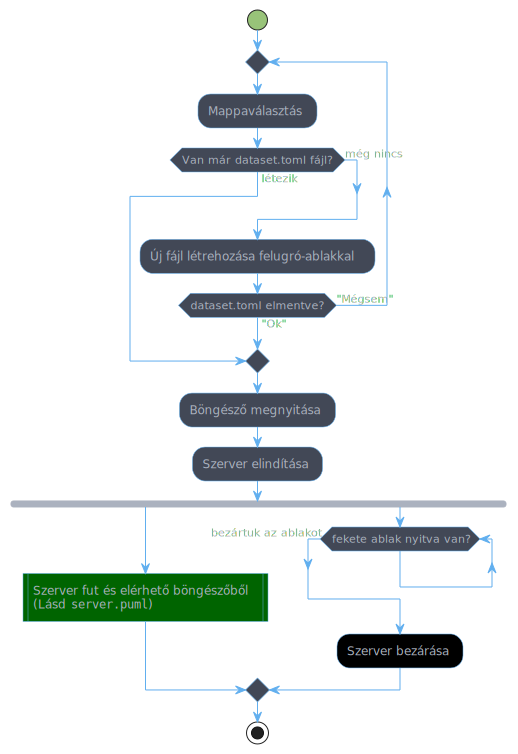
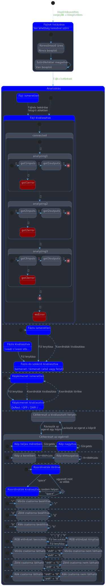
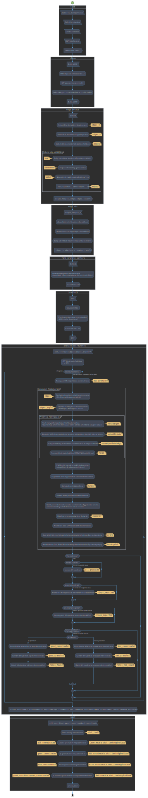
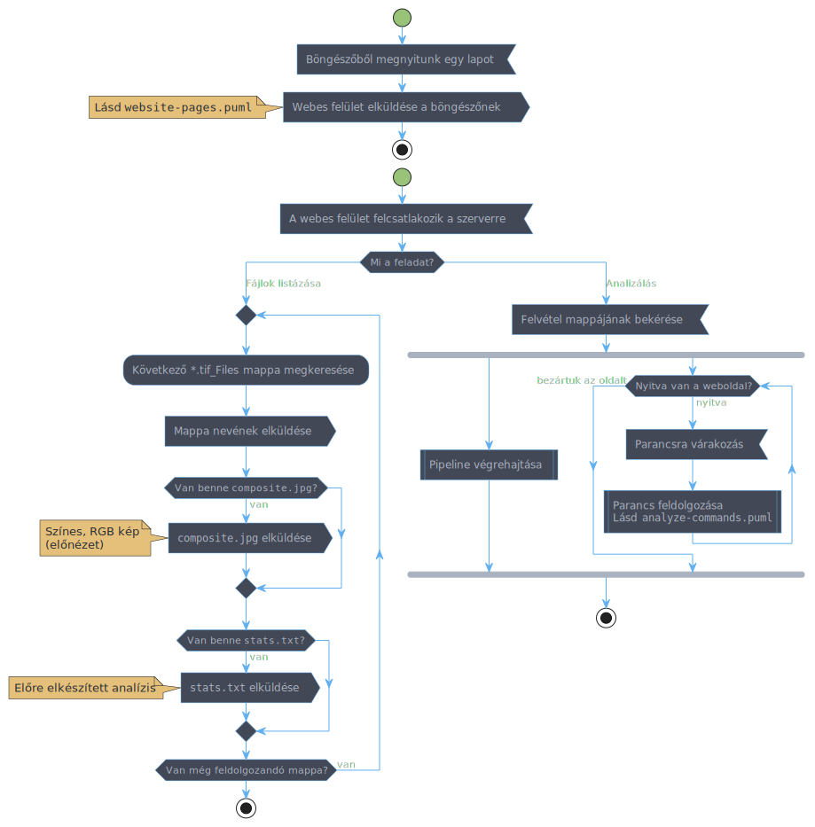
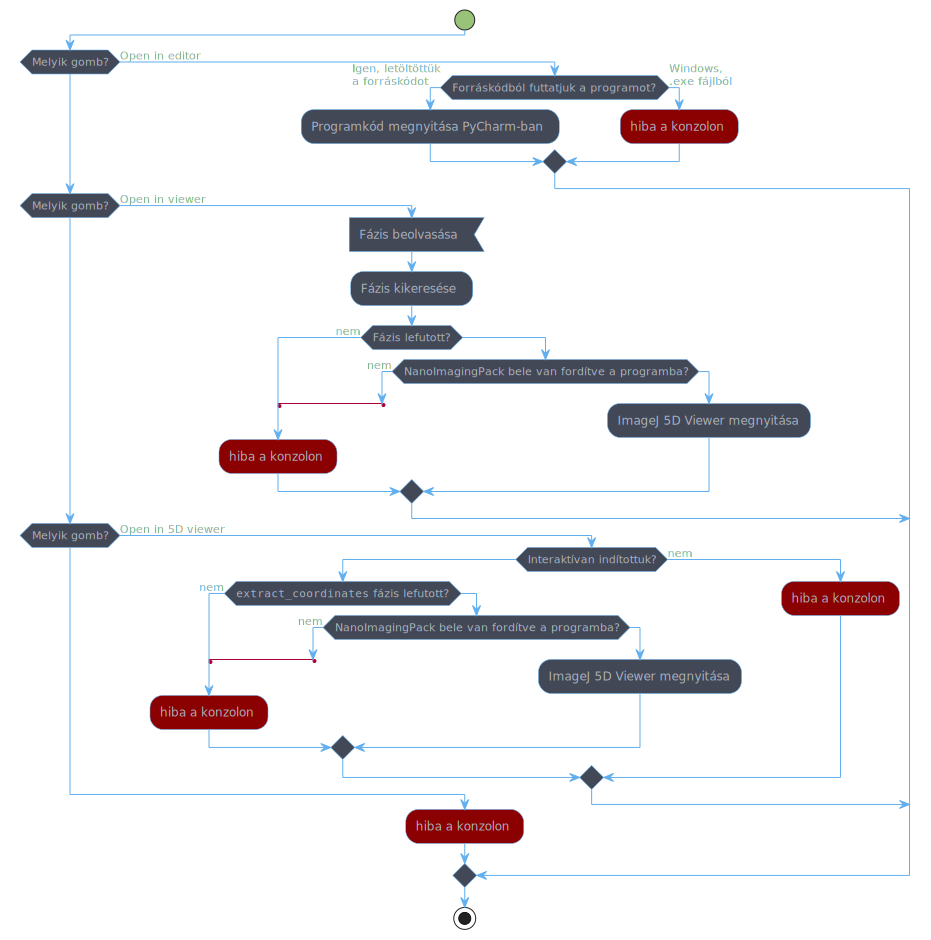

A program Windowson futtatható változata egy egyszerűen használható önkicsomgoló program formájában kerül terjesztésre.
Az alább dokumentált változat letölthető itt: gfp-ring-detector.exe (Forráskód: master, 2023-04-04 16:51)
A legutóbbi automatikus build letölthető a következő linkkel, amennyiben az elmúlt 90 napban volt frissítés: https://bit.ly/gfp-ring-detector-downloader
A forráskódból való futtatáshoz szükség van az Anaconda telepítésére illetve egy új környezet létrehozására a conda-env.yml alapján.
Ezután az adott környezet aktiválását követően indítsuk el ízlés szerint a server.py vagy interactive-server.py programot.
A program webes felületről használható.
Indításkor pár felugró dialógus ablakban ki kell választanunk, hogy melyik mappában találhatóak az elemezni kívánt fájlok (“dataset”), továbbá a a program megkérdez néhány, az adathalmazra vonatkozó információt, majd megnyílik egy böngészőablak, amelyben betöltődik a program webes felülete.
Ez alatt megnyílik egy konzolos ablak, amelyben a program az esetleges hibaüzeneteket elénk tárja. A program leállításához ezt az ablakot kell bezárni, mindaddig, amíg a konzolablak nyitva van, akár több fájlt is megnyithatunk különböző lapokon.

Mivel a program egy webszervert indít el, a Windows tűzfal indításkor megkérdezheti, hogy szeretnénk-e engedélyezni a más gépekkel való kommunikálást. Ha azt szeretnénk, hogy a hálózatunkra kapcsolt más számítógépekről is vezérelni lehessen a programunkat, akkor engedjük át a programot a tűzfalon, ellenkező esetben ne. Sajnos a beállítás módosítása némileg körülményes, és legközelebbi indításkor nem fogja a Windows megkérdezni.
A program webes felületén lehetőség van az analizálandó felvételek listázására, egyedi képek analizálására.
Ha kiválasztunk egy képet elemzésre, akkor egyrészt a webes felület megkéri a konzolos alkalmazást, hogy végezzen el analízist az adott képen, továbbá valós időben jeleníti meg számunkra a részeredményeket. Mind az egyes lépések kimenetei és a bemenetei is láthatóak.
Ha rávisszük az egeret egy-egy képre, akkor van lehetőség nagyításra/kicsinyítésre (görgő), a kép arrébbhúzására, vagy akár színes kompozit létrehozására az r/g/b gombokkal, vagy a kompozit képen az egyes csatornák ki-/bekapcsolására ha ugyanezen gombok mellett nyomva tartjuk a shit gombot.
Az alábbi diagramon kékkel jelöltem azokat az állapotokat, amelyek megmaradnak, ha újratöltjük az oldalt, vagy ha a címsort átadjuk valakinek, esetleg elmentjük az oldalt könyvjelzőbe.

A program korábbi verzióiról készült egy színes-szagos leírás, ez elérhető a következő linken:
https://bit.ly/gfp-ring-detector-v2-demo
A program által végrehajtott algoritmust az alábbi diagramon szemléltetem:

A konzolos alkalmazás belső működése az alábbi diagramon látható:

A speciális gombok működésébe betekintést nyújthat az alábbi diagram:
